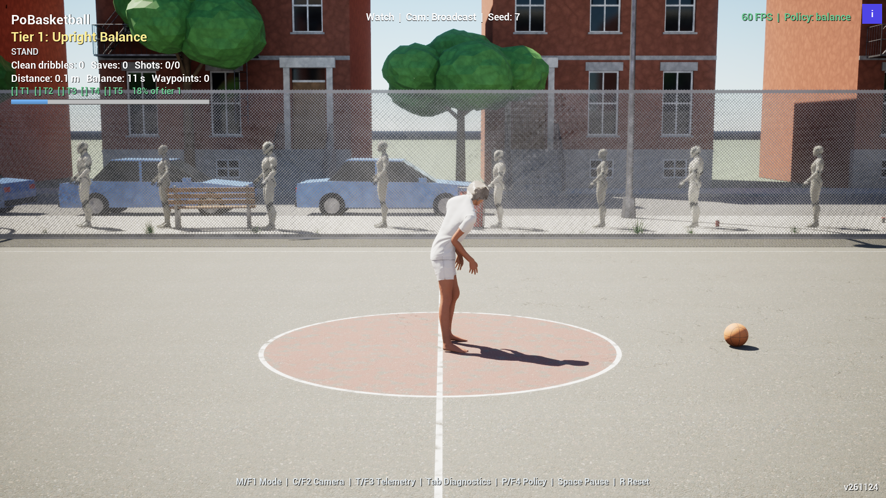
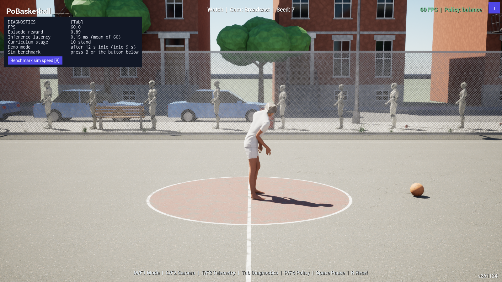
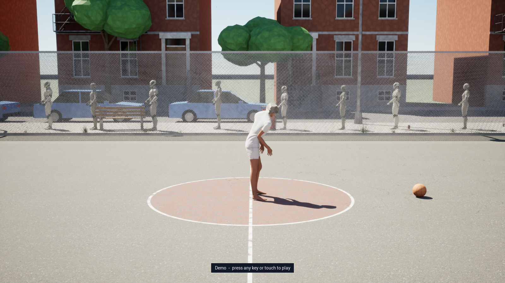

Before — 16:9 Default Watch HUD (telemetry shown bottom-left)

After — 16:9 Default Watch HUD (telemetry hidden by default, T/F3 to toggle)

After — 16:9 Diagnostics Overlay On (Tab)

After — 16:9 Demo Mode (HUD hidden)